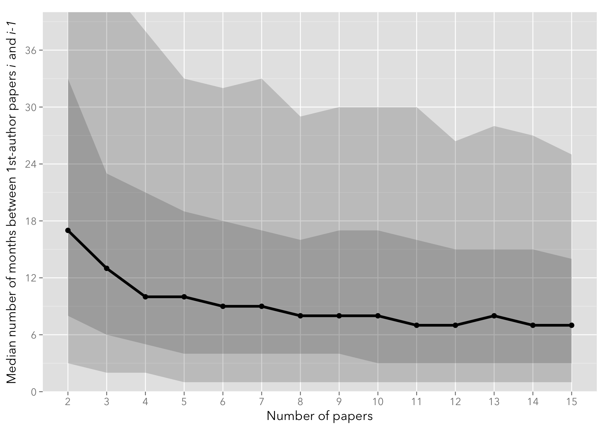
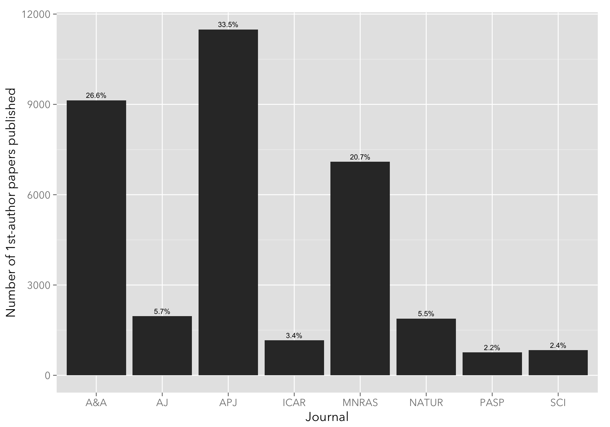
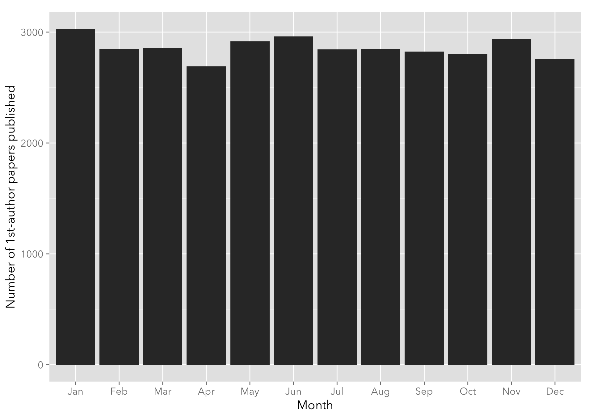

Get code & data from the GitHub repository
I’ve been interested for a while in mining ADS (NASA’s Astrophysics Data System, an online repository of bibliographic records). Using the ADS developer API, it is quite simple to download bibliographical records as JSON data and do some analysis on a sample of astronomical publications. (See this post and this post to see some of the previous experiments I did on ADS data.)
The dataset I will create below will track the number of months between successive first-author papers (i.e. between the first and the second, the second and the third, etc.) to test the hypothesis that the rate of publishing papers increases as the author becomes more experienced and entrenched. This file (README.Rmd) contains all the analysis code used.
Disclaimer: This data is for exploratory purposes only. No pretense of accuracy is implied!
I downloaded ADS refereed bibliographical records for 10,813 author names in the form "^Lastname, F.". The data returned contains the first 40 rows (or fewer), sorted by date (oldest first). Only records from the following journals are retained: ApJ, MNRAS, A&A, AJ, PASP, Icarus, Nature, and Science. Only authors that published their first paper after 1960 are considered. See the next section for the full analysis and justification.
The file data.csv contains the fields bibcode (the journal where the paper was published), year and month (the publication date), id (a unique author identifier – no actual names are used), min_year (the date of the first publication), npap (the ordinal number of the paper for that author id), and diff (the lag between successive papers, in months). The total number of authors that have more than one paper published in the journals listed above is whittled to 5,470.
The following plot shows the median number of months between successive papers, with the 10-25-75-90th percentiles shown as a shaded area. The quantiles.csv contains pre-processed quantiles from the data.csv file.
quantiles <- read.csv('quantiles.csv')
ggplot(quantiles, aes(x=npap)) +
geom_ribbon(aes(x=npap, ymin=q10, ymax=q90), alpha=0.2) +
geom_ribbon(aes(x=npap, ymin=q25, ymax=q75), alpha=0.2) +
geom_line(aes(x=npap, y=q50), size=1.5) +
geom_point(aes(x=npap, y=q50), size=3) +
ylab(latex2exp("Median number of months between 1st-author papers \\textit{i} and \\textit{i-1}")) +
xlab("Number of papers") +
scale_x_continuous(breaks=1:(max(quantiles$npap)+1)) +
scale_y_continuous(breaks=seq(0, 100, by=6)) +
coord_cartesian(ylim=c(0, 40)) +
theme(panel.grid.minor.x=element_blank())
On average, the lag between first-author papers decreases steadily from approximately a year and a half (18 months) between the first and the second paper, flattening to approximately 7-8 months by the tenth paper published.
I only show up to the 15-th paper, as the number of authors that have more than 15 first-author papers published is comparatively small (see below).
The following plot shows the number of papers published, grouped by journal name (the usual suspects: ApJ, AJ, A&A, Icarus, MNRAS, Nature, and Science). As expected, ApJ, A&A, and MNRAS figure prominently.
intervals <- read.csv("data.csv")
papers_perc <- intervals %>%
group_by(bibcode) %>%
tally %>%
mutate(perc=sprintf("%.1f%%", 100*n/sum(n)))
ggplot(intervals, aes(x=bibcode)) +
xlab("Journal") +
ylab("Number of 1st-author papers published") +
geom_histogram() +
geom_text(aes(x=bibcode, y=n, label=perc), data=papers_perc, vjust=-0.5, size=3) I’m quite surprised by that an almost equal fraction of AJ and Nature papers are present in the sample, but a quick search on ADS seems to bear this out (credit to Dr. Natalie Gosnell for pointing this out.)
The following plot groups papers by month of publication. Seems pretty flat.
ggplot(intervals, aes(x=factor(month))) +
xlab("Month") +
ylab("Number of 1st-author papers published") +
geom_histogram(binwidth=1) +
scale_x_discrete(labels=month.abb) 
The following R code was used to create the dataset.
I use the stringr, dplyr, and plyr packages to munge the data I download from ADS. The rjson package is used to convert JSON data into R objects.
library(stringr)
library(plyr)
library(dplyr)
library(memoise)
library(rjson)
library(latex2exp)The following function is used to download data from the given URL. The memoise function is used to cache results. I use a 2-seconds throttle when downloading from ADS.
# Read URL content, with throttling and caching of the response
if (!file.exists('read_url.rds')) {
read_url <- memoise(function(url, throttle=getOption('ads.throttle', 1)) {
Sys.sleep(throttle)
con <- url(url)
on.exit(close(con))
message(url)
return(readLines(con, warn=FALSE))
})
} else {
read_url <- readRDS('read_url.rds')
}
read_urls <- function(urls) {
return(sapply(urls, read_url))
}My ADS dev key is stored as an environment variable (you can get one from ADS).
# Read ADS dev key
ads_key <- Sys.getenv("ADS_KEY")This is the template URL used to query ADS. It retrieves up to 40 records of refereed 1st-author papers for the author.
# Get pubdates for the first 40 papers that are 1st author
ads_url <- str_c("http://adslabs.org/adsabs/api/search/?q=author:%22^@author.%22&sort=DATE+asc&fl=pubdate&max_rows=40&filter=property:refereed&dev_key=", ads_key)These are the journals used. We excluded other journals since the ADS records for them don’t always include the month (the month is set to 0). This is also the case for some of the older papers (e.g., this paper). In order to avoid including records with incomplete date information, I (a) exclude authors whose first paper is before 1960; and (b) remove authors that have any papers with the month field set to 0.
journals <- c('APJ', 'MNRAS', 'A&A', 'AJ', 'PASP', 'ICAR', 'NATUR', 'SCI')
minyear <- 1960I start with a list of authors (in the form Lastname, F.) that I gathered from previous work on AstroTRENDS. I remove some of the spurious authors that made their way in there.
# Read list of authors from authors.rds, as a character vector where each item is Lastname, F.
# authors.rds not included (for privacy reasons), but you can easily create your own.
data <- data_frame(author=unlist(readRDS("authors.rds"))) %>%
mutate(id=row_number()) %>%
filter(!(str_detect(author, 'Array') | str_detect(author, 'University') | str_detect(author, 'Collaboration') | str_detect(author, 'University'))) I then loop through the list of authors and download the JSON record from ADS; when the record is retrieved, I parse the bibcode, year and month and exclude any paper not in the “approved” list of journals.
# Loop through the list of authors
intervals <- ldply(data$author, function(a) {
# Get the list of papers from the JSON returned by the ADS API
url <- str_replace(ads_url, '@author', URLencode(a))
text <- NULL
tries <- 0
error <- NULL
text <- tryCatch(read_urls(url), error=function(e) { error <<- e; Sys.sleep(20); NULL })
if (is.null(text)) {
return(NULL)
}
docs <- fromJSON(text)$results$docs
# Loop through the list of papers for the author
ldply(docs, function(d) {
# Extract the journal and year from the bibcode
match <- str_match(d$bibcode, '([[:digit:]]{4})([[:alnum:]&]{1,5})')
year <- as.numeric(match[2])
journ <- str_to_upper(match[3])
# Only include the paper if the journal is in the list of allowed journals
if (journ %in% journals) {
month <- as.numeric(str_match(d$pubdate, '[[:digit:]]{4}-([[:digit:]]{2})')[2])
data_frame(author=a, bibcode=journ, year=year, month=month, months=year*12+month)
}
}, .id=NULL)
})From the raw data downloaded, I set up a new intervals data frame that contains some derived data:
# Create "intervals" dataframe -- the diff column will contain the number of months elapsed
# between the (i+1)-th and the i-th npap.
intervals <- intervals %>%
# Inner join with the authors dataframe in order to get the author IDs for cross-checking
inner_join(data) %>%
# Remove the name of the author for privacy reasons
select(-author) %>%
group_by(id) %>%
# Create a npap column containing the paper index (1st, 2nd, etc.), and a
# min_year column (the year of the first paper published)
mutate(zero_month=any(month == 0), min_year=min(year), npap=row_number()) %>%
# Remove any author that has a paper with a 0-month stamp, or with first paper published before
# minyear
filter(zero_month == FALSE & min_year > minyear) %>%
# Compute differences between successive papers
mutate(diff=c(NA, diff(months))) %>%
ungroup()
# Save the file as data.csv
write.csv(intervals, file="data.csv")Since the diff column (the interval between the i-th and the (i-1)-th paper, in months) ends up being quite noisy – as expected – I derive median and 10%, 25%, 75% and 90% quantiles.
# Calculate quantiles
quantiles <- intervals
quantiles <- quantiles %>%
# Only look at first 15 papers
filter(npap <= 15 & npap > 1) %>%
group_by(npap) %>%
# Calculate quantiles
summarise(q10 = quantile(diff, 0.1, na.rm=TRUE),
q25 = quantile(diff, 0.25, na.rm=TRUE),
q50 = quantile(diff, 0.5, na.rm=TRUE),
avg = mean(diff, na.rm=TRUE),
q75 = quantile(diff, 0.75, na.rm=TRUE),
q90 = quantile(diff, 0.9, na.rm=TRUE)) %>%
ungroup()
write.csv(quantiles, file="quantiles.csv")Then, I compute the maximum number of papers for each author id to derive the number of papers histogram (see previous section.)
max_npap <- intervals
max_npap <- max_npap %>%
group_by(id) %>%
summarise(max_npap = max(npap))
write.csv(max_npap, file="max_npap.csv")Finally, I save the memoised function to disk to cache the raw JSON data.
# Save response cache to disk upon exit
saveRDS(read_url, 'read_url.rds')^Ford, E. B. as the author and forcing exact name matching on ADS means that we lose records where the author is recorded as ^Ford, E.. There may be a better solution to avoid this.